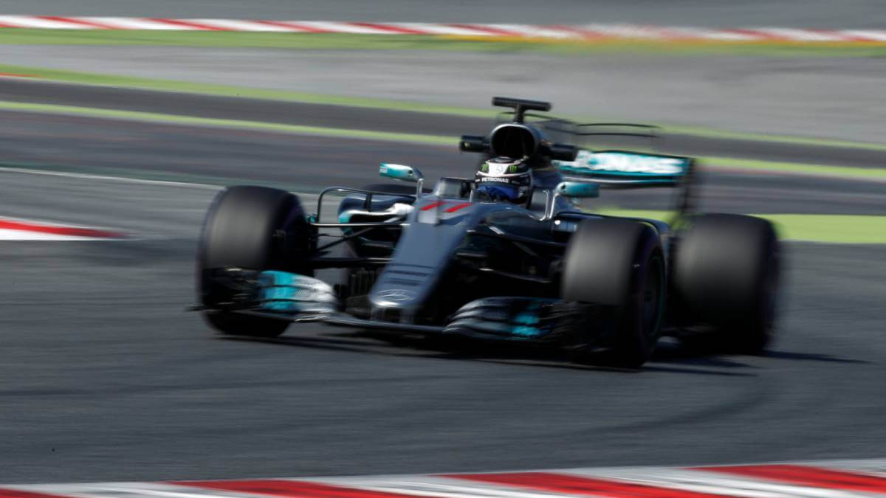

Alonso: "Ahora no hay que pilotar como niños pequeños" 13.03.2017 El bicampeón español de McLaren Honda cree que los cambios en los Pirelli son acertados: "Es la mejor manera de sentir un F1".
Alonso con su McLaren Honda, el piloto que menos rueda 13.03.2017 Valtteri Bottas fue quien más vueltas completó al Circut Barcelona Catalunya con un total de 628. Fernando, 190.
Análisis: Mercedes sigue delante y McLaren aún más atrás  12.03.2017 A pesar de que Ferrari es el equipo que más mejora en tiempos con respecto a 2016, los alemanes han hecho todo lo necesario para llegar a Australia primeros.